Image Analysis
Table of Contents
- Introduction
- Pixels
- Google Earth Engine
- Bands
- False color
- Image analysis
- Building a mosaic
- Classification
- Elevation
- Pixel values from tiles?
- Summary
Terms: remote sensing, pixels, bands, multispectral image, true color, Landsat, false color, NIR band, NDVI, DEM
Introduction
The previous lesson introduced imagery collected by satellites and aircraft to represent Earth’s surface. Imagery is often used in basemaps as a visual aid on services like Google Maps. However, imagery is also useful for analysis. Detecting the properties of Earth’s surface using sensors on satellites and aircraft and analyzing those properties with software is the basis of the field of remote sensing.
Remote sensing images are made up of pixels, and these pixels tell us more about the planet’s surface than just the color. Pixels can represent properties of the ground such as the material or elevation. Therefore, imagery is not simply photographs, but datasets with information that can be uncovered through image analysis.
Conducting analysis on imagery requires access to the original source data captured by the sensor onboard the satellite or aircraft. Unlike tile layers or other compressed images, the source imagery can be a strain on storage and computing resources, especially for web maps.
In response, cloud computing has emerged as a useful tool for image analysis. Huge collections of imagery are available for processing online without having to download images to your computer. In this lesson and the related assignments, we will use the vast server infrastructures of Google and Amazon to crunch pixel data.
Pixels
Pixels in satellite and aerial imagery represent a measurement of a characteristic of the ground at a location. This could be reflectance of light, elevation, or other physical properties. A digital remote sensing image is a grid of pixels.
In regular digital photos and graphics, we can think of these pixels as dots of color that our eyes blend together into a picture.
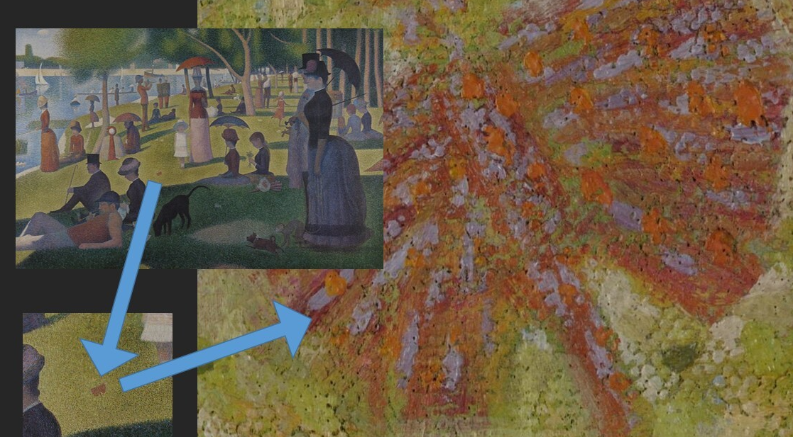 Figure 1. This painting is composed of many small strokes of color. Our eyes do the work of blending them together to recognize a picture.
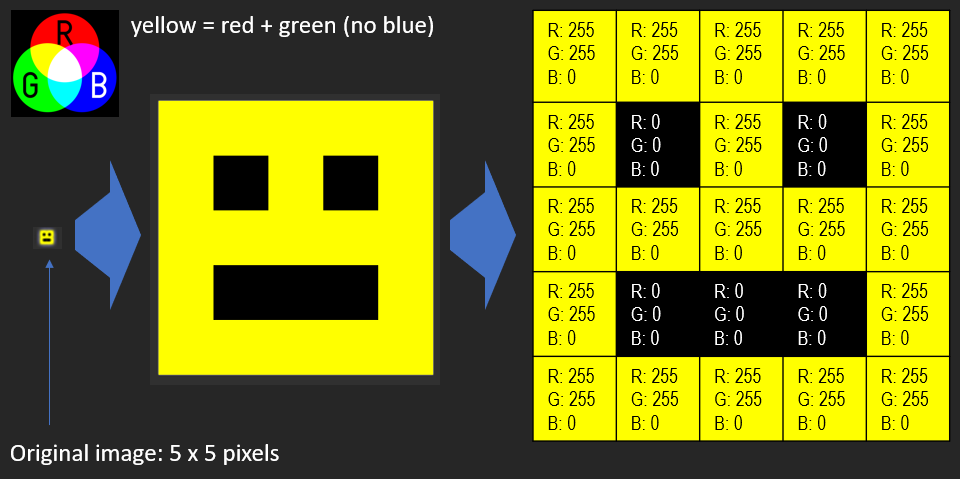 Figure 2. Pixel values can be represented as colors to turn a grid of data into an image. Here, a small 5x5-pixel image is “blown up” to show how each of its pixels is a numeric representation of a color, which the computer interprets to display on your screen.
In a typical satellite image, however, the values are not simply colors. They are measurements of how much energy was reflected or emitted from the surface as electromagnetic waves.
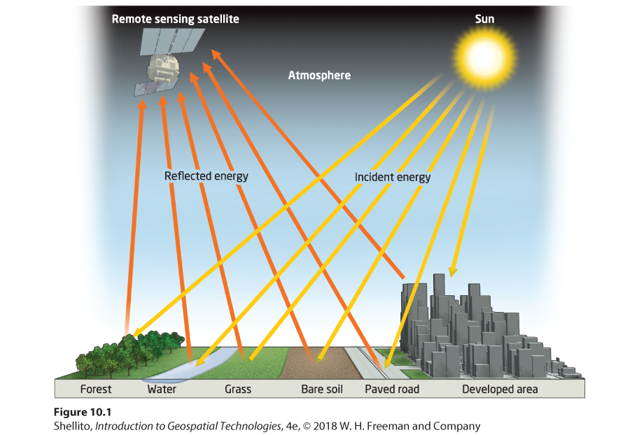 Figure 3. Energy emitted from the Sun reflects off of Earth’s surface and can be detected by sensors on aircraft and spacecraft.
In the Landsat satellite image below, each pixel covers a 30x30-meter square on the ground, and the numeric value of the pixel is a measurement taken by Landsat’s Operational Land Imager sensor. The OLI is measuring the brightness or intensity of electromagnetic waves from the Sun that are being reflected from Earth at that location.
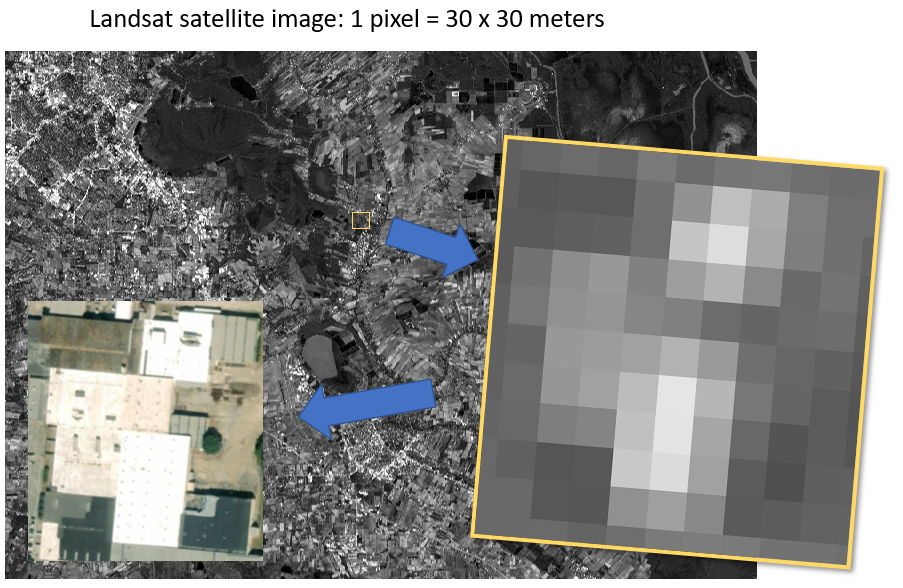 Figure 4. Zooming into an image taken by the Landsat satellite shows the individual pixels, each of which has a value representing how much energy was reflected by Earth’s surface in that 30x30-meter area. A high-resolution aerial photograph (bottom left) is inset to show the structures on the ground at that location. The bright white roofs reflect more energy and are therefore represented in the Landsat image as lighter pixels.
Areas on the ground with greater reflectance will be given higher pixels values, represented here with brighter shades.
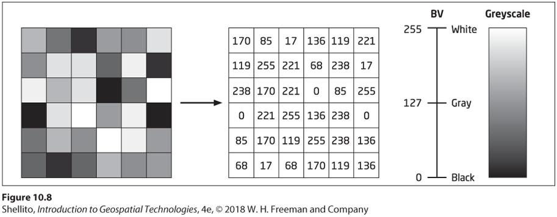 Figure 5. An example image where individual pixels are given a value between 0 (black) and 255 (white) depending on how strong the reflectance was at the pixel’s location on the ground.
Google Earth Engine
To help give a more hands-on explanation of imagery, we will use Google Earth Engine.
Google Earth Engine (not to be confused with Google Earth) is a cloud computing platform for processing and displaying large datasets of geographic information. When you perform a task in Earth Engine, numerous servers may be put to use in the background to handle your request. Since in the previous assignment we downloaded images and generated map tiles on personal computers, we will have an appreciation for Earth Engine’s ability to do this on a massive scale online in a fraction of the time.
We will command Earth Engine by writing scripts in a programming language called JavaScript, one of the cornerstone languages of web development.
Go to the Google Earth Engine Code Editor. Familiarize yourself with the interface, especially the Code Editor panel in the center, the Map at the bottom, and the Inspector/Console/Tasks panel on the right. The Script panel to the top left is where you can create new files and folders and see a list of your saved scripts.
 Figure 6. Labeled interface of the Earth Engine Code Editor. Source: Earth Engine documentation.
Figure 6. Labeled interface of the Earth Engine Code Editor. Source: Earth Engine documentation.
First Run
To create your first Earth Engine script, paste the following JavaScript code into the editor and click Run:
var landsatImage = ee.Image("LANDSAT/LC08/C01/T1_TOA/LC08_024039_20200930"); // import Landsat image
var layerOptions = {bands: ['B4', 'B3', 'B2'], max: 0.3}; // set bands to display
Map.centerObject(landsatImage, 8); // center map on image at zoom level 8
Map.addLayer(landsatImage, layerOptions, 'Landsat true color'); // display image on map, labeled
This will zoom the map to Louisiana and show a single Landsat scene of the southwestern part of the state.
// is a comment to explain what the code does.
Now click on the Inspector tab, then click anywhere on the Landsat image. Expand Objects > properties to see details about the image. Notably, DATE_ACQUIRED is September 30, 2020, and CLOUD_COVER is zero, so no clouds obstruct our view of the ground from space. Expand Pixels > Landsat true color: Image (12 bands) to see pixel values at the point you clicked. Higher values mean stronger reflectance. You can click different places in the image to see how the reflectance values change depending on the surface, such as a white roof or green field.
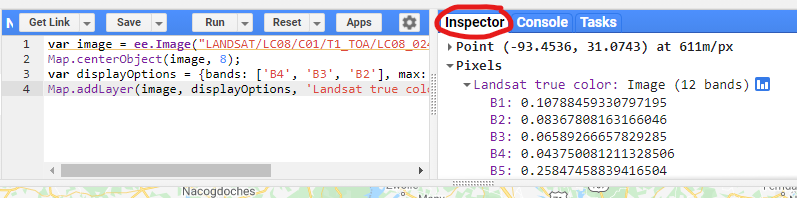 Screenshot of the Inspector tab in Earth Engine to see image and pixel attributes.
Keep this code in the editor; we will change and add to it during the lesson.
Bands
Satellites will typically measure reflectance in different bands, or discrete ranges in the electromagnetic spectrum, divided by wavelength. Images with data from multiple bands are multispectral. When we inspected the pixel values in the example above, the Earth Engine inspector showed us multiple bands because the image was multispectral.
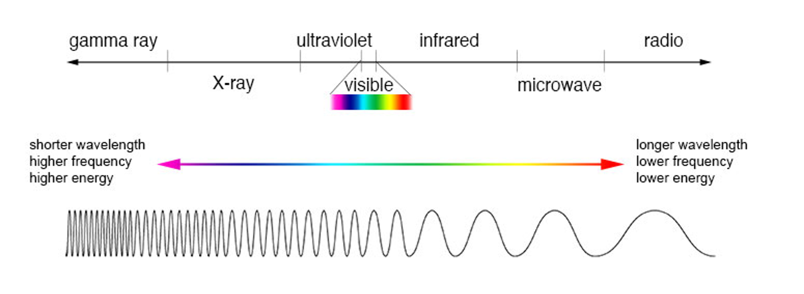 Figure 7. The electromagnetic spectrum can be divided into different ranges, or bands. The range we are most familiar with is the visible spectrum. Satellites typically capture images in red, green, and blue parts of the spectrum to create true-color images. They also capture infrared and other bands.
A true-color image, or what we might think of as a regular color photo, is actually a composite of three images from three bands on the electromagnetic spectrum:
- Red: 600-700 nanometer wavelength
- Green: 500-600 nanometer wavelength
- Blue: 400-500 nanometer wavelength
This can be a point of confusion for a beginner working with satellite imagery that has not already been processed to look like a photo. The “image” you download from a data provider might be separate images for each band measured by the satellite sensor, each looking like a black-and-white photo.
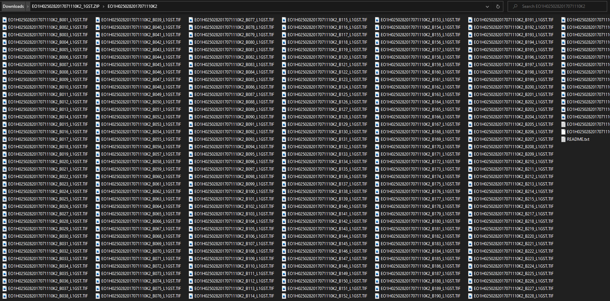 Figure 8. Scenes captured by the Hyperion sensor onboard the EO-1 satellite contain more than 200 bands. Downloading one of its GeoTIFF products from USGS Earth Explorer gives you many separate image files, one for each band.
I frequently use Landsat images as an example in lessons. The Landsat program, operated by the U.S. Geological Survey and NASA, has been observing the planet for more than 40 years through a series of satellites. A massive collection of images has accumulated, and it is now available to download for free. As a result, the data has been widely used in research.
Landsat 8 is the eighth and most recent operational satellite in the Landsat series, as of this lesson’s update in late 2021. However, Landsat 9 launched in September 2021 and NASA will begin delivering imagery in 2022. The specifications below for Landsat 8 will still apply to Landsat 9.
The Landsat 8 satellite captures 11 images for 11 bands, from the visible-light to infrared regions of the spectrum.
- B1 coastal/aerosol
- B2 blue
- B3 green
- B4 red
- B5 near-infrared (NIR)
- B6 shortwave infrared 1
- B7 shortwave infrared 2
- B8 panchromatic
- B9 cirrus clouds
- B10 thermal infrared 1
- B11 thermal infrared 2
Go back to the Earth Engine code editor, which should still have the code from the previous section to show Landsat imagery. Find this line:
var layerOptions = {bands: ['B4', 'B3', 'B2'], max: 0.3};
That tells Earth Engine to display the scene using Landsat’s red, green, and blue bands (true color). Change it to only show the red band and click Run:
var layerOptions = {bands: ['B4'], max: 0.3};
You will see a grayscale image—a single band from only part of the visible spectrum. It is Band 4, the red band. In the grayscale image, lighter pixels have more red light, meaning the ground at that location more strongly reflects electromagnetic waves in the 640-670 nanometer wavelength range, as defined for Landsat 8. The single-band image’s color ramp could be changed to other colors, but single-band images are by default displayed in grayscale.
Now replace all of the code with the lines below to show several bands as separate images, and click Run. You can use the Layers control on the map to show and hide each layer to compare them (refer to Figure 6 for where controls are in Earth Engine).
var landsatImage = ee.Image("LANDSAT/LC08/C01/T1_TOA/LC08_024039_20200930");
Map.centerObject(landsatImage, 8);
Map.addLayer(landsatImage, {bands: ['B1'], palette: ['blue', 'white'], min: 0.10, max: 0.13}, 'Band 1 coastal/aerosol');
Map.addLayer(landsatImage, {bands: ['B2'], max: 0.4}, 'Band 2 blue');
Map.addLayer(landsatImage, {bands: ['B3'], max: 0.4}, 'Band 3 green');
Map.addLayer(landsatImage, {bands: ['B4'], max: 0.4}, 'Band 4 red');
Map.addLayer(landsatImage, {bands: ['B5'], max: 0.4}, 'Band 5 NIR');
Map.addLayer(landsatImage, {bands: ['B10'], palette:['gray','yellow','red'], min: 295, max: 315}, 'Band 10 Thermal Infrared');
The image for Band 1 is now represented by a blue and white color ramp to highlight variation in coastal waters. Band 10, thermal infrared, has a gray-yellow-red ramp to better highlight warm surfaces. Visible + NIR bands 2-5, however, are all shown in grayscale with the same brightness so you can compare them. Notice how bright the NIR band is due to Louisiana’s dense vegetation cover.
var indicates a variable is being defined. You could change the variable name landsatImage to another name (begin with lowercase, no spaces).
False color
Depending on where you download imagery data, it might already be processed into a composite color image. If not, it will be up to you to use software to apply a color palette to the image(s) in order to communicate the rich information captured by satellites.
All of this comes into play when you display imagery in maps. It might be obvious that you would display the “red” band using the color red, but what color would you use to represent NIR, which is invisible to the human eye? What about the shortwave-infrared band?
In the same way that cartographers must choose how to symbolize points, lines, and polygons on maps, they must also make decisions on how to symbolize imagery. Images that use unnatural combinations of red, green, and blue to depict bands outside of the visible spectrum are known as false-color images.
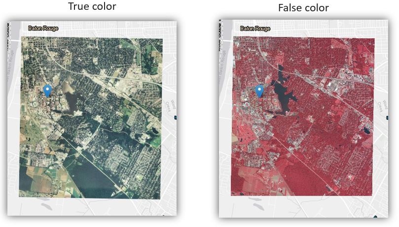
Figure 9. A true-color image (left) showing the visible light bands with a composite of shades of red, green, and blue; a false-color image (right) where the shortwave-infrared band is represented with shades of red, the near-infrared with green, and the green band with blue.
Go back to Earth Engine and replace the code with the lines below to again show the Landsat image in true color.
var landsatImage = ee.Image("LANDSAT/LC08/C01/T1_TOA/LC08_024039_20200930");
var layerOptions = {bands: ['B4', 'B3', 'B2'], max: 0.3};
Map.centerObject(landsatImage, 8);
Map.addLayer(landsatImage, layerOptions, 'Landsat true color');
Go to the Inspector tab. Now find the greenest place you see on the map and click the brightest green pixel. Look at the pixel values in the inspector. You would expect the green band B3 to have a relatively high reflectance value compared to the blue B2 and red B4 bands, right? Looking at the figure below, we see that is the case for the pixel I clicked. It is higher than the red and blue values.
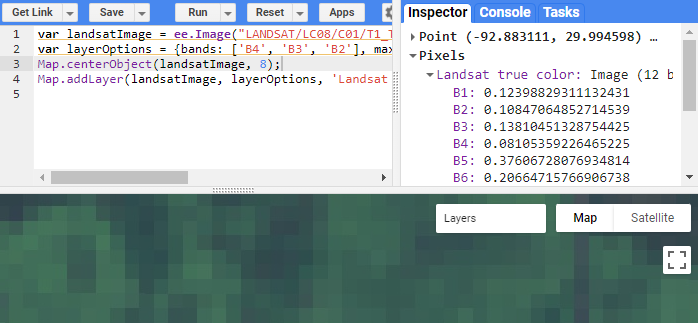
But what about band B5, which is not currently visible on the map? Its value is far greater than the green band. Band B5 is the NIR band (near-infrared), in which Landsat measures reflectance in the 850-880 nanometer wavelength range to detect vegetation. The chlorophyll in plants reflects green light strongly, but the reflectance of NIR is even stronger—much more so.
What if we wanted to “see” the NIR band? Instead of displaying the red, green, and blue bands (B4, B3, B2), we can display NIR as red, or other combinations. This will create a false-color image where vegetation is red.
Look back at this line of code we pasted:
var layerOptions = {bands: ['B4', 'B3', 'B2'], max: 0.3};
We have a list of three bands there, and the order matters. Whichever band is in the first position will be displayed as red, the second green, and the third blue, making the order R-G-B. Change the list to a 5-4-3 combination and click Run:
var layerOptions = {bands: ['B5', 'B4', 'B3'], max: 0.3};
Some common false-color band combinations are 5-4-3, 6-4-3, and 7-6-4. Give them a try!
Image analysis
Since there is a numeric value behind each pixel in a digital image, we can perform calculations on the pixel values to gain a better understanding of what is on the ground.
A common calculation performed on multispectral imagery is the Normalized Difference Vegetation Index (NDVI). It is a number between -1 and 1 that represents how much vegetation is likely at a pixel location.
This can be calculated because of a particular property of healthy plants: they absorb red light and strongly reflect NIR light, even more strongly than the green light we see. Therefore, if a pixel shows a large difference between the amount of reflected red and NIR light, then the ground there can be considered more densely vegetated.
The formula to calculate this difference is:
NDVI = (NIR - Red) ÷ (NIR + Red)
In Earth Engine, you could use the inspector to tell you pixel values for Landsat’s red B4 and NIR B5 bands, then plug those values into the formula above to calculate a pixel’s NDVI. Let’s say you clicked a pixel in a forest, you might get a red value of 0.03 and NIR value of 0.20.
NDVI = (0.20 - 0.03) ÷ (0.20 + 0.03)
NDVI = 0.74
Or, you could use Earth Engine’s functions to perform that calculation programmatically on millions of pixels…
Go back to the Code Editor and again start with a true-color Landsat image:
var landsatImage = ee.Image("LANDSAT/LC08/C01/T1_TOA/LC08_024039_20200930");
var layerOptions = {bands: ['B4', 'B3', 'B2'], max: 0.3};
Map.centerObject(landsatImage, 8);
Map.addLayer(landsatImage, layerOptions, 'Landsat true color');
The NDVI formula takes the red B4 and NIR B5 band values, so add these lines below the first four lines. This will save the NIR and red bands to separate variables:
var nir = landsatImage.select('B5');
var red = landsatImage.select('B4');
Now we can plug those nir and red variables into the NDVI formula and save the result to a new image called NDVI. Add this line:
var ndvi = nir.subtract(red).divide(nir.add(red)).rename('NDVI');
Add the ndvi image to the map, labeling it NDVI image in the layer control, and then click Run:
Map.addLayer(ndvi, {}, 'NDVI image');
You should see a grayscale image where vegetation is bright and water is black. If you use the inspector to view the pixel values of the NDVI image, each one of the values is the result of the NDVI formula calculated with the same pixel’s values in the NIR band image and red band image.
Since NDVI values range from -1 to 1, you could change the min/max values in the display options between the curly braces { and }. Replace the previous line with this:
Map.addLayer(ndvi, {min: -1, max: 1}, 'NDVI image');
Going further, you could modify the previous line to add a color palette to the display options instead of using grayscale, and click Run:
Map.addLayer(ndvi, {min: -1, max: 1, palette: ['blue', 'white', 'green']}, 'NDVI image');
Using that palette, pixels with a higher NDVI value will be greener, implying denser vegetation, while negative values are blue since they are likely water.
There is actually a shortcut function in Earth Engine, normalizedDifference(), for calculating NDVI to help shorten the code. Altogether, the NDVI image can be produced with this simplified script:
var ndvi = ee.Image("LANDSAT/LC08/C01/T1_TOA/LC08_024039_20200930")
.normalizedDifference(['B5', 'B4'])
.rename('NDVI');
Map.addLayer(ndvi, {min: -1, max: 1, palette: ['blue', 'white', 'green']}, 'NDVI image');
Map.centerObject(ndvi, 8);
Building a mosaic
NDVI can be applied to research in agriculture and many other fields, but it can also be useful for building image mosaics. When you look at basemaps on Google Maps or any other service, you’ll notice the planet looks very green when zoomed out to the state, national, or continental scales. What you are seeing is a mix of pixels extracted from different images at different times to select only the best (spring/summer vegetation, no clouds).
Landsat images have a CLOUD_COVER attribute, and NDVI can be used to identify vegetated pixels at the greenest time of the year. Therefore, we too can build a pretty mosaic. We will use Earth Engine to go from this:
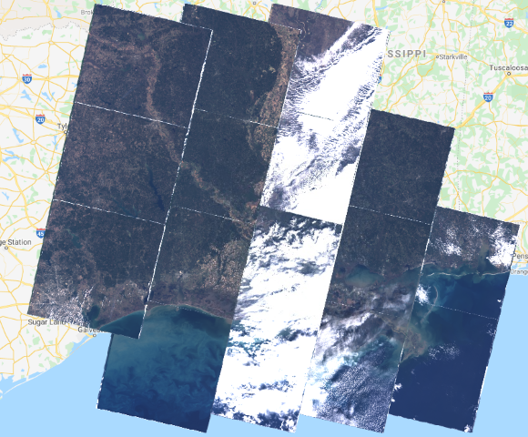
To this:
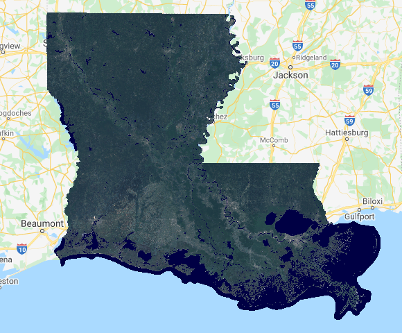
First, import two datasets already hosted in the Earth Engine catalog:
- U.S. state boundaries to clip the images to the outline of Louisiana
- The Landsat 8 image collection
We will need to add these and all subsequent lines into the same script.
var statePolygon = ee.FeatureCollection("TIGER/2018/States")
.filter(ee.Filter.eq('NAME', 'Louisiana'));
var landsat8 = ee.ImageCollection('LANDSAT/LC08/C01/T1_TOA');
.filter, could be put on the end of the first line, but it is broken into two lines to make it easier to read.
The Landsat dataset contains images for the entire planet since 2013, so it needs to be limited to Louisiana in 2020 for recent pixels.
var landsatFiltered = landsat8
.filterDate('2020-01-01', '2020-12-31')
.filterBounds(statePolygon);
At this point, we can temporarily add the image collection to the map, just to understand what we are working with, by adding one line and clicking Run.
Map.addLayer(landsatFiltered, {bands:['B4','B3','B2'], max: 0.3}); // delete this after previewing the map
You should see images that cover Louisiana, some with clouds. Proceed after you have deleted that last line.
Here we will define a function to filter out images with more than 20% cloud cover. We are only defining the function now; we will “call” it later, meaning the calculation won’t be run until later in the code.
var filterClouds = function(image) {
var scored = ee.Algorithms.Landsat.simpleCloudScore(image)
.select(['cloud']).lte(20);
return image.updateMask(scored);
};
Here we define another function to calculate NDVI values and add them to a new band in the image. We will “call” it later, too.
var addNDVI = function(image) {
var ndvi = image.normalizedDifference(['B5', 'B4']).rename('NDVI');
return image.addBands(ndvi);
};
The method for creating this mosaic will make the land look good but not water. We must create a separate water layer based on a water index (NDWI).
var addWater = function(image) {
var ndwi = image.normalizedDifference(['B3', 'B5']).rename('NDWI');
var ndwiMasked = ndwi.updateMask(ndwi.gte(0.3));
return image.addBands(ndwiMasked);
}
Now we have all of the pieces in place and we’re ready to put Earth Engine to work digging through the image collection and running calculations on millions of pixels. In the lines below you can see where we are calling our filterClouds and addNDVI functions, creating a mosaic based on the best quality pixels as determined by NDVI, and clipping the whole mosaic to the land area of Louisiana.
var greenMosaic = landsatFiltered
.map(filterClouds)
.map(addNDVI)
.qualityMosaic('NDVI')
.clip(statePolygon);
var snack = apple.wash().slice(5).dip('caramel').eat();
This similar piece of code will call addWater to cut out the water surfaces and mosaic them together.
var blueMosaic = landsatFiltered
.map(filterClouds)
.map(addWater)
.mosaic()
.select('NDWI')
.clip(statePolygon);
To see what the water layer looks like alone, add this and Run, but delete after previewing:
Map.addLayer(blueMosaic, {min: 0.3, max: 1, palette: ['172F53', '000044']}); // delete this after previewing the map
Nearly finished, we need to set display options for true color bands 4-3-2 and the water band, then combine the two layers into a single mosaic. The water color will not be true-color, but it will make it easy to distinguish land and water, even muddy water.
var greenOptions = {bands: ['B4', 'B3', 'B2'], max: 0.3};
var blueOptions = {min: 0.3, max: 1, palette: ['172F53', '000044']};
var mosaicLandWater = ee.ImageCollection([
greenMosaic.visualize(greenOptions),
blueMosaic.visualize(blueOptions)
]).mosaic();
Finally, center on Louisiana at zoom level 7 and add the mosaic to the map.
Map.centerObject(statePolygon, 7);
Map.addLayer(mosaicLandWater, {}, 'State Landsat mosaic');
Put together, all of those code snippets look like this, with comments:
// Import datasets
var statePolygon = ee.FeatureCollection("TIGER/2018/States")
.filter(ee.Filter.eq('NAME', 'Louisiana'));
var landsat8 = ee.ImageCollection('LANDSAT/LC08/C01/T1_TOA');
// Filter Landsat images of the state in a time period
var landsatFiltered = landsat8
.filterDate('2020-01-01', '2020-12-31')
.filterBounds(statePolygon);
// Function to filter out images with more than 20% cloud cover
var filterClouds = function(image) {
var scored = ee.Algorithms.Landsat.simpleCloudScore(image)
.select(['cloud']).lte(20);
return image.updateMask(scored);
};
// Function to determine the vegetation index of pixels in an image
var addNDVI = function(image) {
var ndvi = image.normalizedDifference(['B5', 'B4']).rename('NDVI');
return image.addBands(ndvi);
};
// Function to make a water layer based on the water index
var addWater = function(image) {
var ndwi = image.normalizedDifference(['B3', 'B5']).rename('NDWI');
var ndwiMasked = ndwi.updateMask(ndwi.gte(0.3));
return image.addBands(ndwiMasked);
}
// Create state mosaic of cloud-free pixels with healthiest vegetation
var greenMosaic = landsatFiltered
.map(filterClouds)
.map(addNDVI)
.qualityMosaic('NDVI')
.clip(statePolygon);
// Create state mosaic of cloud-free water areas
var blueMosaic = landsatFiltered
.map(filterClouds)
.map(addWater)
.mosaic()
.select('NDWI')
.clip(statePolygon);
// Set display options for true-color mosaic and water mosaic
var greenOptions = {bands: ['B4', 'B3', 'B2'], max: 0.3};
var blueOptions = {min: 0.4, max: 1, palette: ['172F53', '000044']};
// Combine the land and water mosaics
var mosaicLandWater = ee.ImageCollection([
greenMosaic.visualize(greenOptions),
blueMosaic.visualize(blueOptions)
]).mosaic();
// Add the finished mosaic to the map
Map.centerObject(statePolygon, 7);
Map.addLayer(mosaicLandWater, {}, 'State Landsat mosaic');
Click Run and you should see the finished product, an image that consists of the clearest, greenest pixels from different images from different times. Louisiana never looked so good!
You can repeat this for other states by simply changing Louisiana in the second line. The larger the state, the longer it will take, so be patient if you mess with Louisiana’s neighbor to the west.
Classification
What is the significance of plants and others materials reflecting waves differently? With that information you can start classifying pixels as certain land cover types—grassland, urban land, water, marsh, forest, etc. With more sensitive instruments and detailed imagery, you might even be able to make more nuanced distinctions—healthy vs. diseased crops, coniferous vs. deciduous forest, or snow vs. ice.
Software can recognize patterns in reflectance from different surfaces and look through every pixel in an image collection to place each pixel into categories of land cover. Then, the software can produce statistics and maps, such as how many square kilometers of forest are in a region, or a map of water bodies.
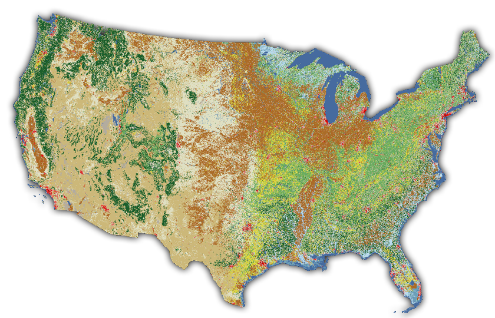
Figure 10. Pixels covering the continental U.S. classified as different land cover types in the National Land Cover Database.
There is a dataset available in Earth Engine with Landsat pixels that have been classified as tree cover. With this we can approximate the area of tree cover in Louisiana. Open the Code Editor, paste and Run this code. A tree cover value in square meters will be printed to the Console (no map yet).
var statePolygon = ee.FeatureCollection("TIGER/2018/States").filter(ee.Filter.eq('NAME', 'Louisiana'));
var gfc2018 = ee.Image('UMD/hansen/global_forest_change_2019_v1_7');
var treeCover = gfc2018
.clip(statePolygon)
.select(['treecover2000']) // select tree cover from the raster
.gte(ee.Number(25)).selfMask(); // include only >= 25% tree cover
var areaSqMeters = treeCover.multiply(ee.Image.pixelArea()); // set unit sq m
var stats = areaSqMeters.reduceRegion({
reducer: ee.Reducer.sum(), // sum area of tree cover pixels
geometry: statePolygon,
scale: 30,
maxPixels: 2e8
});
print(stats); // print the sum to the console
You can add these lines to display the tree cover pixels on the map, centered on Louisiana at zoom level 7.
Map.centerObject(statePolygon, 7);
Map.addLayer(treeCover, {palette: 'green'}, 'Tree Cover');
Together, all of these pixels add up to the total area of tree cover in Louisiana in square meters: 64400045886.27201 or about 15.9 million acres. This number will change depending on the threshold defined for a tree cover pixel. It was 25% in this example, meaning that any pixel in the Hansen dataset classified as having less than 25% tree cover was not included in the count.
Elevation
Another type of imagery you might encounter is a digital elevation model (DEM), which has pixel values representing elevation. Airborne and spaceborne lidar sensors fire beams of light at the surface to measure distance and calculate terrain elevation. This information is coded into a grid of pixels (a raster), where each pixel represents the average elevation for that patch of land.
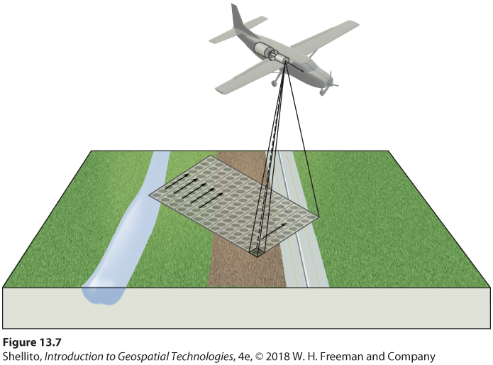
Figure 11. Diagram of an aircraft collecting elevation data using a lidar sensor. The 3D lidar points can be processed into a 2D image for display on maps.
In the source DEM of the figure below, each pixel is a 5x5-meter square on the ground, and the pixel value is the average elevation in feet measured by a lidar sensor. GIS software was used to color the data in grayscale. In this case, lower elevations are dark and higher elevations are light. Other colors could also be used (see the orange-yellow-green image on the header of this website, derived from the same lidar dataset).
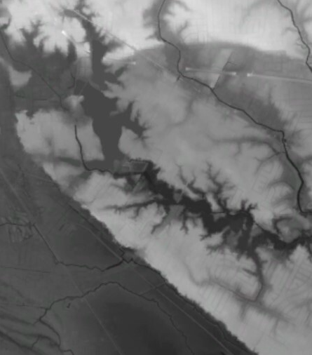
Figure 12. An image representing elevation in south Baton Rouge. Every pixel has an elevation value that is colored in grayscale, where darker pixels are lower elevation and lighter pixels are higher.
A defining feature of this image is the sharp change from light to dark along a line running northwest-southeast. This is the Mississippi River flood plain in south Baton Rouge. Pixels have values around 30-40 feet to the northeast and less than 20 feet to the southwest. This elevation change can be clearly seen when driving on Highland Road eastward from the campus of LSU, where there is usually low land to your right and high land to your left.
You can see a national elevation image in Earth Engine with the code below, and the assignment accompanying this lesson will use this dataset on a more local scale.
var dem = ee.Image("USGS/NED");
Map.addLayer(dem, {min: 0, max: 4000, palette: ['green','yellow','orange','brown','white']}, 'DEM');
Map.setCenter(-95, 37, 4);
Pixel values from tiles?
We’ve learned that tile layers of imagery do not contain the original image data, such as reflectance values; they are just regular JPG or PNG images and are not suitable for analysis (see the lesson on tiling). Yet in the last section, we were able to click on the Landsat image in the map, which was a tile layer, and the inspector gave us pixel values for the pixel we clicked. How is that possible?
The images and mosaics you see in Earth Engine are indeed tile layers (you can usually notice the squares loading), and when you view the tile layer you are not downloading the original image’s pixel values. Instead, when you click the map, Earth Engine knows the lat/lon position you clicked and queries the imagery dataset on a server for the pixel at that location, then returns the pixel values to your browser.
The same goes for all of the image processing we did. When you change an image from true-color to false-color, for example, the processing is taking place with the source images on Google’s servers, and the result is tiled and sent to your browser. That way, you never have to download the massive source imagery collections, just the speedy tile layers for your current zoom level.
Summary
This lesson looked at images as datasets, where every pixel has a value that is a measurement of ground conditions, such as the reflectance or elevation. Reflectance tells us more about the ground than just the color, because different materials reflect electromagnetic waves differently. Two crop fields, for example, might both appear green in a satellite image viewed as true-color, but using false-color infrared could reveal that one field is healthier, because healthy vegetation reflects more strongly towards the infrared part of the spectrum.
A single satellite or aerial image is not usually too much information for a personal computer to handle, but large image collections are better processed by cloud computing platforms employing Web GIS, where datasets and geoprocessing tools are offered as web services. Programming languages like JavaScript can be used to communicate with these web services, typically. Google Earth Engine has an online code editor where you can write JavaScript to analyze imagery and see the result displayed on a map or a console.
TopBack to Lessons